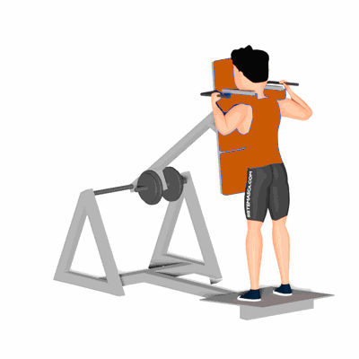

Agachamento no Hack Invertido

O exercício irá trabalhar o fortalecimento e hipertrofia dos músculos da coxa e glúteos.
Ficha Técnica
Tipo: Musculação
Grupo Muscular: Glúteo
Aparelho: Nenhum
Músculos: Nenhum
Como realizar
- Posicione-se de frente para o encosto do Hack;
- Em seguida, apoie o rosto de maneira confortável, e ponha os ombros sob as almofadas;
- Então, busque o local de melhor apoio e segurança para suas mãos;
- Alongue o corpo e permaneça na posição inicial e com a máquina destravada;
- Inspire, em seguida realize o agachamento de forma calma até o seu limite;
- Mantenha os pés alinhados e retorne à posição inicial;
- Realize os movimentos de acordo com as series e repetições recomendadas pelo professor(a).
 RC STORE
RC STORE